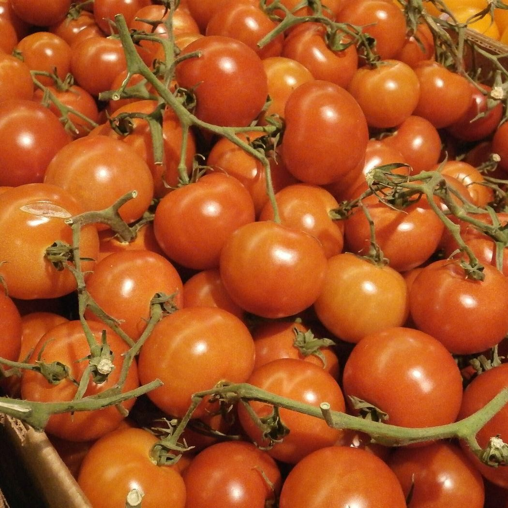
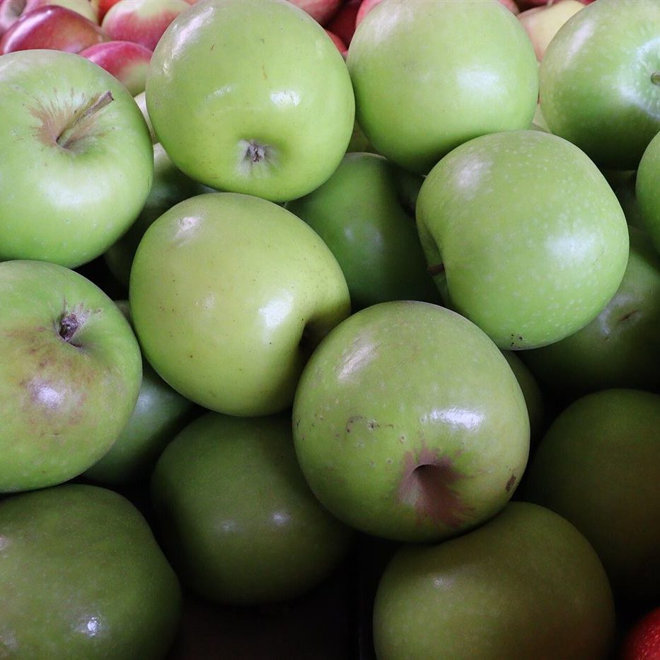

メニュー
メニュー・価格は準備中(お問い合わせください)です。
- メニュー内容
- 準備中(お問い合わせください)
- 価格
- 準備中(お問い合わせください)
- アレルギー・持ち帰り・予約
- 準備中(お問い合わせください)




イメージ写真(フリー素材。実際のメニューではありません)
サンプルページです。営業時間・メニュー等は準備中(お問い合わせください)です。
メニュー・価格は準備中(お問い合わせください)です。


イメージ写真(フリー素材。実際のメニューではありません)